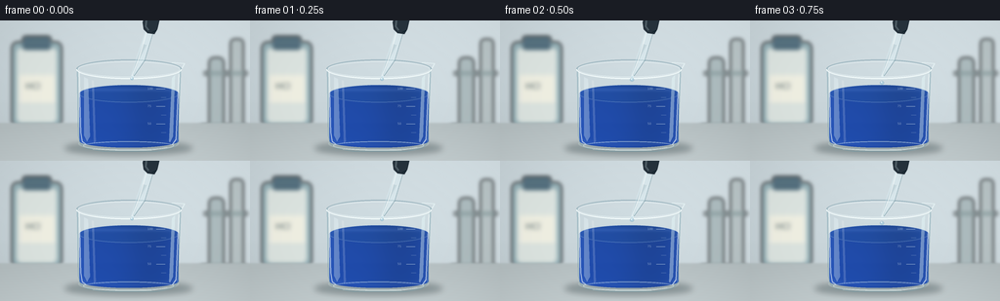
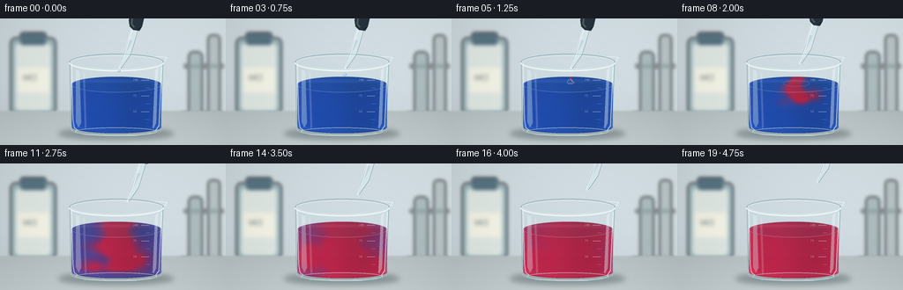
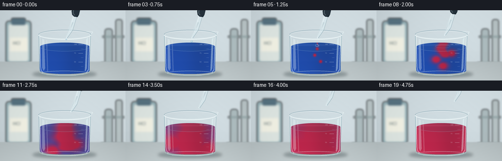

CODING AGENTS AS PIXEL WORLD MODELS
traex/GPT-6.1-Sol · material_0037
点击播放 · 原生 RGB 像素
逐轮保存的候选
回放视频、检查图与代码变化。
每份候选均可单独播放。实际图片检查记录在下方工具轨迹中。
候选 01播放与检查图
点击播放 · 原生 RGB 像素


展开代码变化
--- 上一保存版本
+++ 本次保存版本
@@ -0,0 +1,165 @@
+from pathlib import Path
+import numpy as np
+from PIL import Image, ImageDraw, ImageFilter, ImageFont
+from artifact_io import save
+
+ROOT = Path(__file__).resolve().parent
+W,H,S = 256,144,4
+w,h=W*S,H*S
+Y,X=np.mgrid[0:h,0:w].astype(float)/S
+rng=np.random.default_rng(31)
+
+def canvas(): return Image.new('RGBA',(w,h),(0,0,0,0))
+def ellipse(d,b,fill,outline=None,width=1):
+ d.ellipse(tuple(int(v*S) for v in b),fill=fill,outline=outline,width=max(1,int(width*S)))
+def line(d,pts,fill,width=1): d.line([(int(x*S),int(y*S)) for x,y in pts],fill=fill,width=max(1,int(width*S)),joint='curve')
+def polygon(d,pts,fill): d.polygon([(int(x*S),int(y*S)) for x,y in pts],fill=fill)
+def rounded(d,b,r,fill): d.rounded_rectangle(tuple(int(v*S) for v in b),int(r*S),fill=fill)
+def mix(img, rgb, alpha):
+ arr=np.asarray(img).astype(float)
+ a=np.clip(alpha,0,1)[...,None]
+ return Image.fromarray(np.uint8(np.clip(arr*(1-a)+np.asarray(rgb)*a,0,255)),'RGB')
+
+# Softly lit, shallow-depth-of-field laboratory, with a pale stone worktop.
+b=np.zeros((h,w,3))
+v=0.6*(X/W)+0.4*(1-Y/H)
+for c,a in enumerate([196,208,213]): b[:,:,c]=a+22*v
+b += rng.normal(0,0.32,(h,w,1))
+bg=Image.fromarray(np.uint8(np.clip(b,0,255)),'RGB')
+props=canvas();d=ImageDraw.Draw(props)
+rounded(d,(12,22,63,109),6,(149,177,184,255))
+rounded(d,(17,28,58,105),5,(222,230,226,255))
+rounded(d,(23,16,52,30),3,(75,104,120,255))
+for xx in range(26,52,4): line(d,[(xx,18),(xx,27)],(143,163,169,180),0.6)
+rounded(d,(20,56,56,84),1,(241,241,228,255))
+font=ImageFont.truetype('/usr/share/fonts/truetype/dejavu/DejaVuSans.ttf',9*S)
+d.text((26*S,62*S),'HCl',font=font,fill=(90,107,112,255))
+rounded(d,(214,38,229,110),5,(175,190,193,255))
+rounded(d,(236,19,249,109),4,(187,199,201,255))
+line(d,[(206,109),(252,109)],(115,139,143,255),4)
+line(d,[(209,54),(253,54)],(137,157,159,255),3)
+props=props.filter(ImageFilter.GaussianBlur(2.1*S));bg.paste(props,(0,0),props)
+bench=np.zeros((h,w,3))
+for c,a in enumerate([179,189,191]): bench[:,:,c]=a+0.35*(Y-101)+4*np.exp(-((X-145)/100)**2)
+bg=mix(bg,bench,1/(1+np.exp(-(Y-105)*1.7)))
+# Soft contact shadow and an optical blue caustic.
+shadow=canvas();d=ImageDraw.Draw(shadow)
+ellipse(d,(66,124,197,138),(35,56,61,88));ellipse(d,(86,127,183,133),(29,45,50,90))
+shadow=shadow.filter(ImageFilter.GaussianBlur(3*S));bg.paste(shadow,(0,0),shadow)
+
+cx=132.;rx=51.; surface=75.; ry=9.
+# Cylinder silhouette with bowed glass base and horizontal elliptical liquid meniscus.
+u=(X-cx)/rx
+bottom=123.5+7*np.sqrt(np.clip(1-u*u,0,1))
+liquid_top=surface-ry*np.sqrt(np.clip(1-u*u,0,1))
+mask=(np.abs(u)<1)&(Y>=liquid_top)&(Y<=bottom)
+surface_mask=(u*u+((Y-surface)/ry)**2<=1)
+
+
+def reaction(t):
+ # Advected, widening acid plume, then complete timelapse mixing.
+ if t<5: return np.zeros_like(X)
+ age=t-5
+ depth=np.maximum(0,Y-68)
+ front=69+age*8.8
+ center=135 + 5*np.sin(depth*.10-age*.52)*(1-np.exp(-depth/12)) + 2*np.sin(depth*.26+age*.6)
+ width=1.2+age*2.6+depth*(.03+age*.016)
+ core=np.exp(-((X-center)/width)**2)*1/(1+np.exp(np.clip((Y-front)/2,-60,60)))
+ # Swirling filament eddies are strongest while the indicator is changing.
+ plume=core
+ for j in range(3):
+ yy=79+j*13+age*3
+ xx=135+(-1)**j*(age*3.5+7)*np.sin(.5*age+j*.8)
+ plume=np.maximum(plume,.83*np.exp(-((X-xx)/(3+age*2.1))**2-((Y-yy)/(3+age*1.5))**2))
+ uniform=np.clip((age-4.0)/8.2,0,1)
+ return np.clip(uniform+(1-uniform)*np.clip(plume*1.6,0,1),0,1)
+
+
+def frame(t):
+ img=bg.copy()
+ # Clear vessel walls, showing the background through the glass.
+ gl=canvas();d=ImageDraw.Draw(gl)
+ polygon(d,[(78,49),(80,123),(85,130),(96,133),(169,133),(181,126),(185,48)],(199,220,226,33))
+ ellipse(d,(80,119,183,134),(216,232,233,63))
+ img.paste(gl,(0,0),gl)
+ f=reaction(t)
+ blue=np.array([19,66,171.]); red=np.array([190,25,65.])
+ col=blue[None,None,:]*(1-f[...,None])+red[None,None,:]*f[...,None]
+ # Transmitted fill is dark at the centre and bright along the curved edges.
+ edge=np.abs(u)**3
+ lighting=0.80+0.16*edge+0.13*np.exp(-((X-113)/32)**2)+0.07*(Y-75)/58
+ col=col*lighting[...,None]
+ col += (np.maximum(0,edge-.5)*25)[...,None]
+ # Very subtle refractive flow texture, absent before injection and fading on equilibration.
+ swirl=np.sin(X*.19+Y*.12+2.5*f)*np.sin(Y*.17-X*.065+t*.3)
+ col+= (swirl*2.8*np.sin(np.pi*f))[...,None]
+ col += 11*np.exp(-((Y-bottom+3)/2.3)**2)[...,None]
+ alpha=np.where(mask,.92,0)
+ img=mix(img,col,alpha)
+ # Looking down through the oval surface: brighter, glossy and gently moving.
+ surfcol=col*.83+np.array([20,27,30])
+ surfcol += 13*np.exp(-((Y-71)/2)**2)[...,None]
+ img=mix(img,surfcol,np.where(surface_mask,.90,0))
+ layer=canvas();d=ImageDraw.Draw(layer)
+ ellipse(d,(81,66,183,84),(0,0,0,0),outline=(171,204,231,106),width=.6)
+ # Rear wall and top rolled rim, including the small pouring lip.
+ ellipse(d,(78,40,186,60),(0,0,0,0),outline=(126,160,173,160),width=1.05)
+ ellipse(d,(80,42,184,58),(0,0,0,0),outline=(239,249,251,220),width=.7)
+ line(d,[(79,49),(80,118),(82,126),(89,131),(105,134),(160,134),(176,131),(182,125),(185,49)],(116,158,169,125),1)
+ line(d,[(81,53),(82.5,115),(84,124),(91,129)],(245,253,253,160),1.1)
+ line(d,[(183,55),(180,122),(175,129)],(246,255,255,166),1)
+ # Broad curved reflections give the beaker a physical glass thickness.
+ polygon(d,[(86,58),(90,60),(92,119),(89,124),(86,118)],(240,253,255,79))
+ polygon(d,[(94,61),(96,62),(98,124),(96,126)],(251,255,255,42))
+ polygon(d,[(176,59),(179,56),(177,119),(174,125),(173,124)],(235,255,255,98))
+ ellipse(d,(85,124,178,133),(0,0,0,0),outline=(227,245,246,150),width=.8)
+ line(d,[(95,132),(118,133),(155,133),(171,130)],(249,255,251,189),.65)
+ # The front half of the elliptical rim is sharp and catches the key light.
+ d.arc(tuple(int(v*S) for v in (78,40,186,60)),0,180,fill=(247,255,255,231),width=int(1.25*S))
+ line(d,[(176,43),(189,44),(186,49)],(233,247,248,216),1.1)
+ # Fine etched volume marks on the glass, unobtrusive and real-world sized.
+ tiny=ImageFont.truetype('/usr/share/fonts/truetype/dejavu/DejaVuSans.ttf',3*S)
+ for yy,num in [(70,'100'),(88,'75'),(106,'50')]:
+ line(d,[(160,yy),(169,yy)],(227,242,246,149),.55)
+ d.text((151*S,(yy-2)*S),num,font=tiny,fill=(225,238,243,135))
+ line(d,[(165,yy+9),(170,yy+9)],(232,247,249,120),.45)
+ # The impact disturbs the surface briefly but adds no bubbles or smoke.
+ if 5<=t<=9:
+ age=t-5
+ rr=3.2+age*4
+ ellipse(d,(135-rr,74-rr*.22,135+rr,74+rr*.22),(0,0,0,0),outline=(207,217,247,int(130*(1-age/5))),width=.65)
+ if t==5:
+ line(d,[(131,73),(132.5,70),(135,69),(137.5,72),(139,73)],(164,198,239,176),.9)
+ img.paste(layer,(0,0),layer)
+ # Glass Pasteur pipette with a partially cropped rubber bulb.
+ lift=max(0,t-6)*2.7
+ dx=max(0,t-6)*1.8
+ pip=canvas();d=ImageDraw.Draw(pip)
+ def pts(p): return [(x+dx,y-lift) for x,y in p]
+ polygon(d,pts([(150,7),(158,9),(148,41),(137,58),(134,57),(140,37)]),(225,243,248,122))
+ polygon(d,pts([(146,24),(150,25),(141,43),(136.5,56),(135,56),(139,42)]),(157,193,205,55))
+ line(d,pts([(150,12),(142,39),(135,57)]),(250,255,255,221),.8)
+ line(d,pts([(157,11),(148,41),(137,57)]),(99,137,149,187),.7)
+ line(d,pts([(134.7,57),(137,57.8)]),(221,241,246,241),.7)
+ polygon(d,pts([(148,-7),(164,-4),(161,9),(158,14),(151,13),(147,9),(146,2)]),(38,51,61,255))
+ line(d,pts([(150,-3),(149,6),(152,10)]),(78,94,102,255),2)
+ line(d,pts([(156,12),(160,10)]),(18,35,43,255),1)
+ # Exactly one clear drop: it grows at the tip, releases, then falls into solution.
+ if t<=4:
+ if t<3:
+ yy=59+t*.45; dr=1.5+t*.25
+ else:
+ yy=63 if t==3 else 69;dr=2.0
+ ellipse(d,(135-dr,yy-dr*.4,135+dr,yy+dr*1.4),(167,204,222,199),outline=(101,146,169,190),width=.45)
+ if t<3: line(d,[(135,57),(135,yy)],(192,226,237,180),1)
+ ellipse(d,(134.2,yy-.3,135,yy+.65),(250,255,255,237))
+ img.paste(pip,(0,0),pip)
+ # Gentle lens vignette and antialiasing, with fine sensor grain.
+ arr=np.array(img).astype(float)
+ vig=1-.075*((X-128)**2/180**2+(Y-77)**2/130**2)
+ arr*=vig[...,None]
+ img=Image.fromarray(np.uint8(np.clip(arr,0,255))).resize((W,H),Image.Resampling.LANCZOS)
+ return np.array(img)
+
+frames=np.stack([frame(i) for i in range(20)])
+save(frames,ROOT)
候选 02播放与检查图
点击播放 · 原生 RGB 像素

展开代码变化
--- 上一保存版本
+++ 本次保存版本
@@ -63,14 +63,16 @@
depth=np.maximum(0,Y-68)
front=69+age*8.8
center=135 + 5*np.sin(depth*.10-age*.52)*(1-np.exp(-depth/12)) + 2*np.sin(depth*.26+age*.6)
- width=1.2+age*2.6+depth*(.03+age*.016)
+ width=(1.2+age*2.6+depth*(.03+age*.016))*(1+.19*np.sin(depth*.20-age*.64))
core=np.exp(-((X-center)/width)**2)*1/(1+np.exp(np.clip((Y-front)/2,-60,60)))
# Swirling filament eddies are strongest while the indicator is changing.
plume=core
for j in range(3):
yy=79+j*13+age*3
xx=135+(-1)**j*(age*3.5+7)*np.sin(.5*age+j*.8)
- plume=np.maximum(plume,.83*np.exp(-((X-xx)/(3+age*2.1))**2-((Y-yy)/(3+age*1.5))**2))
+ eddy=.83*np.exp(-((X-xx)/(3+age*2.1))**2-((Y-yy)/(3+age*1.5))**2)
+ eddy*=np.clip((age-1)/3,0,1)/(1+np.exp(np.clip((Y-front)/2,-60,60)))
+ plume=np.maximum(plume,eddy)
uniform=np.clip((age-4.0)/8.2,0,1)
return np.clip(uniform+(1-uniform)*np.clip(plume*1.6,0,1),0,1)
可观测工具轨迹
实际执行的命令与返回图片。
命令 1exit 0
/bin/bash -lc "ls -la && cat prompt.txt && printf '\\n---RULES---\\n' && cat GENERATION_RULES.md && printf '\\n---SPEC---\\n' && cat task_spec.json"
命令 2exit 0
/bin/bash -lc "cat artifact_io.py && python - <<'PY' import importlib.util for n in ['numpy','PIL','scipy']: print(n, bool(importlib.util.find_spec(n))) PY"
命令 3exit 0
/bin/bash -lc "cat > generate.py <<'PY'
from pathlib import Path
import numpy as np
from PIL import Image, ImageDraw, ImageFilter, ImageFont
from artifact_io import save
ROOT = Path(__file__).resolve().parent
W,H,S = 256,144,4
w,h=W*S,H*S
Y,X=np.mgrid[0:h,0:w].astype(float)/S
rng=np.random.default_rng(31)
def canvas(): return Image.new('RGBA',(w,h),(0,0,0,0))
def ellipse(d,b,fill,outline=None,width=1):
d.ellipse(tuple(int(v*S) for v in b),fill=fill,outline=outline,width=max(1,int(width*S)))
def line(d,pts,fill,width=1): d.line([(int(x*S),int(y*S)) for x,y in pts],fill=fill,width=max(1,int(width*S)),joint='curve')
def polygon(d,pts,fill): d.polygon([(int(x*S),int(y*S)) for x,y in pts],fill=fill)
def rounded(d,b,r,fill): d.rounded_rectangle(tuple(int(v*S) for v in b),int(r*S),fill=fill)
def mix(img, rgb, alpha):
arr=np.asarray(img).astype(float)
a=np.clip(alpha,0,1)[...,None]
return Image.fromarray(np.uint8(np.clip(arr*(1-a)+np.asarray(rgb)*a,0,255)),'RGB')
# Softly lit, shallow-depth-of-field laboratory, with a pale stone worktop.
b=np.zeros((h,w,3))
v=0.6*(X/W)+0.4*(1-Y/H)
for c,a in enumerate([196,208,213]): b[:,:,c]=a+22*v
b += rng.normal(0,0.32,(h,w,1))
bg=Image.fromarray(np.uint8(np.clip(b,0,255)),'RGB')
props=canvas();d=ImageDraw.Draw(props)
rounded(d,(12,22,63,109),6,(149,177,184,255))
rounded(d,(17,28,58,105),5,(222,230,226,255))
rounded(d,(23,16,52,30),3,(75,104,120,255))
for xx in range(26,52,4): line(d,[(xx,18),(xx,27)],(143,163,169,180),0.6)
rounded(d,(20,56,56,84),1,(241,241,228,255))
font=ImageFont.truetype('/usr/share/fonts/truetype/dejavu/DejaVuSans.ttf',9*S)
d.text((26*S,62*S),'HCl',font=font,fill=(90,107,112,255))
rounded(d,(214,38,229,110),5,(175,190,193,255))
rounded(d,(236,19,249,109),4,(187,199,201,255))
line(d,[(206,109),(252,109)],(115,139,143,255),4)
line(d,[(209,54),(253,54)],(137,157,159,255),3)
props=props.filter(ImageFilter.GaussianBlur(2.1*S));bg.paste(props,(0,0),props)
bench=np.zeros((h,w,3))
for c,a in enumerate([179,189,191]): bench[:,:,c]=a+0.35*(Y-101)+4*np.exp(-((X-145)/100)**2)
bg=mix(bg,bench,1/(1+np.exp(-(Y-105)*1.7)))
# Soft contact shadow and an optical blue caustic.
shadow=canvas();d=ImageDraw.Draw(shadow)
ellipse(d,(66,124,197,138),(35,56,61,88));ellipse(d,(86,127,183,133),(29,45,50,90))
shadow=shadow.filter(ImageFilter.GaussianBlur(3*S));bg.paste(shadow,(0,0),shadow)
cx=132.;rx=51.; surface=75.; ry=9.
# Cylinder silhouette with bowed glass base and horizontal elliptical liquid meniscus.
u=(X-cx)/rx
bottom=123.5+7*np.sqrt(np.clip(1-u*u,0,1))
liquid_top=surface-ry*np.sqrt(np.clip(1-u*u,0,1))
mask=(np.abs(u)<1)&(Y>=liquid_top)&(Y<=bottom)
surface_mask=(u*u+((Y-surface)/ry)**2<=1)
def reaction(t):
# Advected, widening acid plume, then complete timelapse mixing.
if t<5: return np.zeros_like(X)
age=t-5
depth=np.maximum(0,Y-68)
front=69+age*8.8
center=135 + 5*np.sin(depth*.10-age*.52)*(1-np.exp(-depth/12)) + 2*np.sin(depth*.26+age*.6)
width=1.2+age*2.6+depth*(.03+age*.016)
core=np.exp(-((X-center)/width)**2)*1/(1+np.exp(np.clip((Y-front)/2,-60,60)))
# Swirling filament eddies are strongest while the indicator is changing.
plume=core
for j in range(3):
yy=79+j*13+age*3
xx=135+(-1)**j*(age*3.5+7)*np.sin(.5*age+j*.8)
plume=np.maximum(plume,.83*np.exp(-((X-xx)/(3+age*2.1))**2-((Y-yy)/(3+age*1.5))**2))
uniform=np.clip((age-4.0)/8.2,0,1)
return np.clip(uniform+(1-uniform)*np.clip(plume*1.6,0,1),0,1)
def frame(t):
img=bg.copy()
# Clear vessel walls, showing the background through the glass.
gl=canvas();d=ImageDraw.Draw(gl)
polygon(d,[(78,49),(80,123),(85,130),(96,133),(169,133),(181,126),(185,48)],(199,220,226,33))
ellipse(d,(80,119,183,134),(216,232,233,63))
img.paste(gl,(0,0),gl)
f=reaction(t)
blue=np.array([19,66,171.]); red=np.array([190,25,65.])
col=blue[None,None,:]*(1-f[...,None])+red[None,None,:]*f[...,None]
# Transmitted fill is dark at the centre and bright along the curved edges.
edge=np.abs(u)**3
lighting=0.80+0.16*edge+0.13*np.exp(-((X-113)/32)**2)+0.07*(Y-75)/58
col=col*lighting[...,None]
col += (np.maximum(0,edge-.5)*25)[...,None]
# Very subtle refractive flow texture, absent before injection and fading on equilibration.
swirl=np.sin(X*.19+Y*.12+2.5*f)*np.sin(Y*.17-X*.065+t*.3)
col+= (swirl*2.8*np.sin(np.pi*f))[...,None]
col += 11*np.exp(-((Y-bottom+3)/2.3)**2)[...,None]
alpha=np.where(mask,.92,0)
img=mix(img,col,alpha)
# Looking down through the oval surface: brighter, glossy and gently moving.
surfcol=col*.83+np.array([20,27,30])
surfcol += 13*np.exp(-((Y-71)/2)**2)[...,None]
img=mix(img,surfcol,np.where(surface_mask,.90,0))
layer=canvas();d=ImageDraw.Draw(layer)
ellipse(d,(81,66,183,84),(0,0,0,0),outline=(171,204,231,106),width=.6)
# Rear wall and top rolled rim, including the small pouring lip.
ellipse(d,(78,40,186,60),(0,0,0,0),outline=(126,160,173,160),width=1.05)
ellipse(d,(80,42,184,58),(0,0,0,0),outline=(239,249,251,220),width=.7)
line(d,[(79,49),(80,118),(82,126),(89,131),(105,134),(160,134),(176,131),(182,125),(185,49)],(116,158,169,125),1)
line(d,[(81,53),(82.5,115),(84,124),(91,129)],(245,253,253,160),1.1)
line(d,[(183,55),(180,122),(175,129)],(246,255,255,166),1)
# Broad curved reflections give the beaker a physical glass thickness.
polygon(d,[(86,58),(90,60),(92,119),(89,124),(86,118)],(240,253,255,79))
polygon(d,[(94,61),(96,62),(98,124),(96,126)],(251,255,255,42))
polygon(d,[(176,59),(179,56),(177,119),(174,125),(173,124)],(235,255,255,98))
ellipse(d,(85,124,178,133),(0,0,0,0),outline=(227,245,246,150),width=.8)
line(d,[(95,132),(118,133),(155,133),(171,130)],(249,255,251,189),.65)
# The front half of the elliptical rim is sharp and catches the key light.
d.arc(tuple(int(v*S) for v in (78,40,186,60)),0,180,fill=(247,255,255,231),width=int(1.25*S))
line(d,[(176,43),(189,44),(186,49)],(233,247,248,216),1.1)
# Fine etched volume marks on the glass, unobtrusive and real-world sized.
tiny=ImageFont.truetype('/usr/share/fonts/truetype/dejavu/DejaVuSans.ttf',3*S)
for yy,num in [(70,'100'),(88,'75'),(106,'50')]:
line(d,[(160,yy),(169,yy)],(227,242,246,149),.55)
d.text((151*S,(yy-2)*S),num,font=tiny,fill=(225,238,243,135))
line(d,[(165,yy+9),(170,yy+9)],(232,247,249,120),.45)
# The impact disturbs the surface briefly but adds no bubbles or smoke.
if 5<=t<=9:
age=t-5
rr=3.2+age*4
ellipse(d,(135-rr,74-rr*.22,135+rr,74+rr*.22),(0,0,0,0),outline=(207,217,247,int(130*(1-age/5))),width=.65)
if t==5:
line(d,[(131,73),(132.5,70),(135,69),(137.5,72),(139,73)],(164,198,239,176),.9)
img.paste(layer,(0,0),layer)
# Glass Pasteur pipette with a partially cropped rubber bulb.
lift=max(0,t-6)*2.7
dx=max(0,t-6)*1.8
pip=canvas();d=ImageDraw.Draw(pip)
def pts(p): return [(x+dx,y-lift) for x,y in p]
polygon(d,pts([(150,7),(158,9),(148,41),(137,58),(134,57),(140,37)]),(225,243,248,122))
polygon(d,pts([(146,24),(150,25),(141,43),(136.5,56),(135,56),(139,42)]),(157,193,205,55))
line(d,pts([(150,12),(142,39),(135,57)]),(250,255,255,221),.8)
line(d,pts([(157,11),(148,41),(137,57)]),(99,137,149,187),.7)
line(d,pts([(134.7,57),(137,57.8)]),(221,241,246,241),.7)
polygon(d,pts([(148,-7),(164,-4),(161,9),(158,14),(151,13),(147,9),(146,2)]),(38,51,61,255))
line(d,pts([(150,-3),(149,6),(152,10)]),(78,94,102,255),2)
line(d,pts([(156,12),(160,10)]),(18,35,43,255),1)
# Exactly one clear drop: it grows at the tip, releases, then falls into solution.
if t<=4:
if t<3:
yy=59+t*.45; dr=1.5+t*.25
else:
yy=63 if t==3 else 69;dr=2.0
ellipse(d,(135-dr,yy-dr*.4,135+dr,yy+dr*1.4),(167,204,222,199),outline=(101,146,169,190),width=.45)
if t<3: line(d,[(135,57),(135,yy)],(192,226,237,180),1)
ellipse(d,(134.2,yy-.3,135,yy+.65),(250,255,255,237))
img.paste(pip,(0,0),pip)
# Gentle lens vignette and antialiasing, with fine sensor grain.
arr=np.array(img).astype(float)
vig=1-.075*((X-128)**2/180**2+(Y-77)**2/130**2)
arr*=vig[...,None]
img=Image.fromarray(np.uint8(np.clip(arr,0,255))).resize((W,H),Image.Resampling.LANCZOS)
return np.array(img)
frames=np.stack([frame(i) for i in range(20)])
save(frames,ROOT)
PY
python generate.py"命令 4exit 0
/bin/bash -lc "python - <<'PY'
p='generate.py'
s=open(p).read()
s=s.replace('width=1.2+age*2.6+depth*(.03+age*.016)','width=(1.2+age*2.6+depth*(.03+age*.016))*(1+.19*np.sin(depth*.20-age*.64))')
s=s.replace('plume=np.maximum(plume,.83*np.exp(-((X-xx)/(3+age*2.1))**2-((Y-yy)/(3+age*1.5))**2))','eddy=.83*np.exp(-((X-xx)/(3+age*2.1))**2-((Y-yy)/(3+age*1.5))**2)\\n eddy*=np.clip((age-1)/3,0,1)/(1+np.exp(np.clip((Y-front)/2,-60,60)))\\n plume=np.maximum(plume,eddy)')
open(p,'w').write(s)
PY
python generate.py
ls -lh pixels.npz index.html inspection.png && python - <<'PY'
import numpy as np
from PIL import Image
z=np.load('pixels.npz')['pixels']
assert z.shape==(144,256,20)
assert len(list(__import__('pathlib').Path('frames').glob('*.png')))==20
assert Image.open('frames/19.png').mode=='RGB'
print('Verified: 20 RGB frames, 256Ã144, 4 fps.')
PY"视觉工具实际返回图片 1

保存候选 2 份；完成命令 4 次；可验证图片返回 1 张。原始 API 响应与完整日志保留在本地。